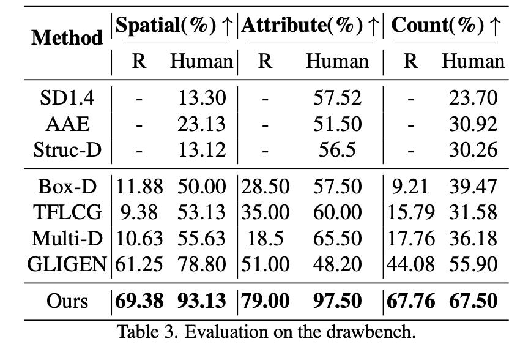
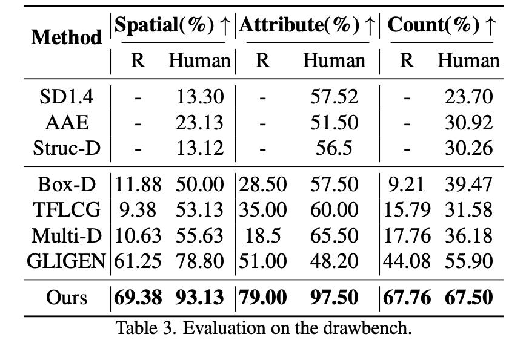

We present a Multi-Instance Generation (MIG) task, simultaneously generating multiple instances with diverse controls in one image. Given a set of predefined coordinates and their corresponding descriptions, the task is to ensure that generated instances are accurately at the designated locations and that all instances' attributes adhere to their corresponding description. This broadens the scope of current research on Single-instance generation, elevating it to a more versatile and practical dimension. Inspired by the idea of divide and conquer, we introduce an innovative approach named Multi-Instance Generation Controller (MIGC) to address the challenges of the MIG task. Initially, we break down the MIG task into several subtasks, each involving the shading of a single instance. To ensure precise shading for each instance, we introduce an instance enhancement attention mechanism. Lastly, we aggregate all the shaded instances to provide the necessary information for accurately generating multiple instances in stable diffusion (SD). To evaluate how well generation models perform on the MIG task, we provide a COCO-MIG benchmark along with an evaluation pipeline. Extensive experiments were conducted on the proposed COCO-MIG benchmark, as well as on various commonly used benchmarks. The evaluation results illustrate the exceptional control capabilities of our model in terms of quantity, position, attribute, and interaction.


 
